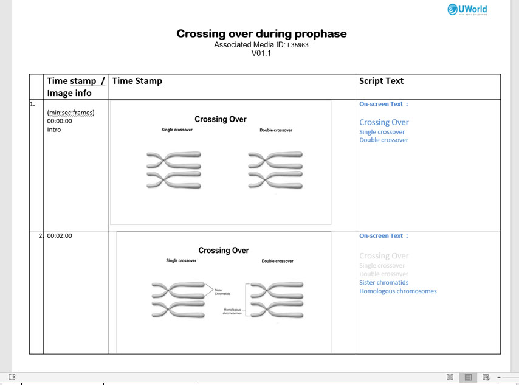
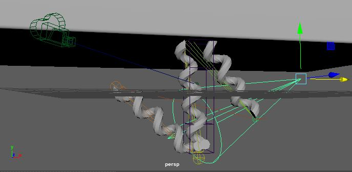
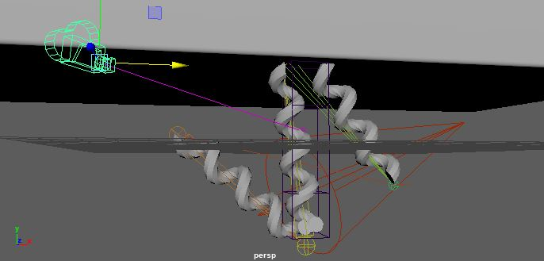
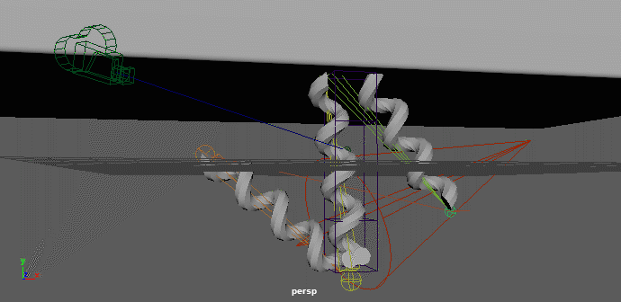
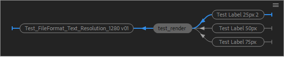
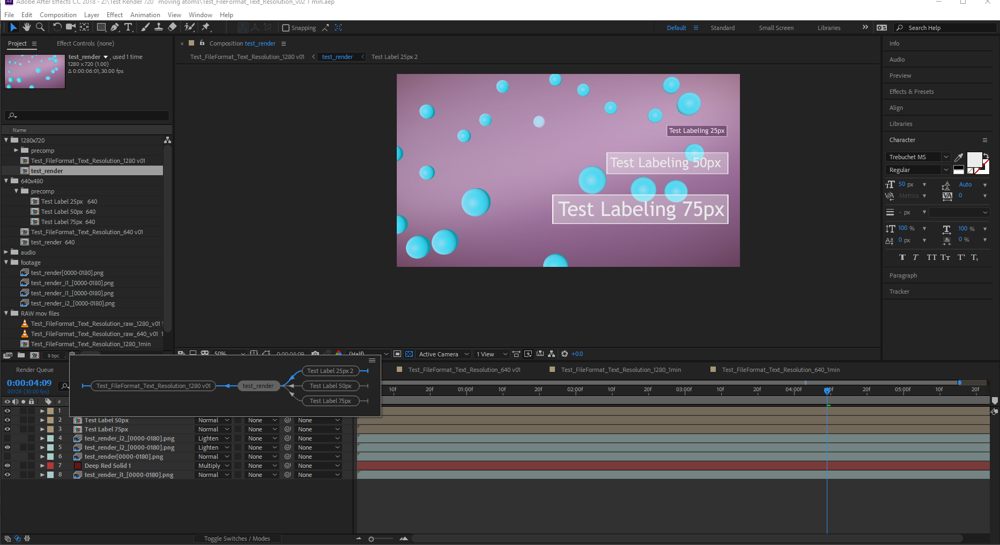

The impact of images & video
-MarketWire
Visual Effects (VFX) and animation
Many of the tools used for medical animation are the same tools used in the visual effects industry. Booya!
Production Flow

Factors of Animation Production Timelines
Script
Key information gathered from the topic and test question are written to accompany the video. Voice over or onscreen text may accompany the final animation.
Storyboard / Motion Design
Storyboards are previsualized keyframes of the final illustration. They set the key players and concepts and organize the storyline.

Model Creation

Lights, Camera, Action!
Each model is built in the virtual world. It's surface need to be described with color, material and texture. Lighting illuminates the scene to define the form and mood. A virtual camera captures the 3D environment, in some cases the camera is kept still so as not to confuse any story telling or compete with animation of objects on screen. Fundamental animation includes rotating, translating and scaling objects in space. Rigging is the term for the drivers of bone animation where underlaying forms deform the shapes viewed on screen.
Lights
Camera
Animation (Rigging)
Rendering
Rendering image sequence

Wireframe vs. Rendered Animations
Post-Production
Compositing elements
In the production of an animation often many layers are created from various rendering sequences and overlaid information. Each one of these elements must be timed with keyframes to match the sequence. Text, leader lines and other descriptive overlays are also layered on at this time.
Items included in composite
Note how the composition flows from layers right the final composition on the left. 
